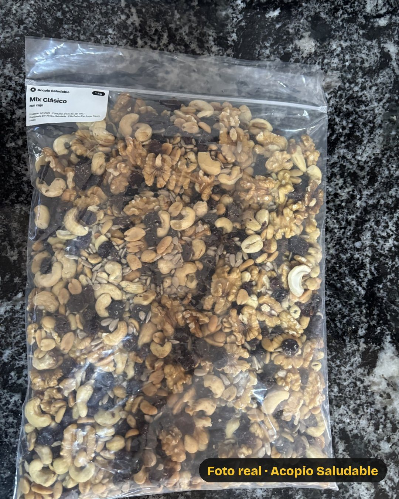
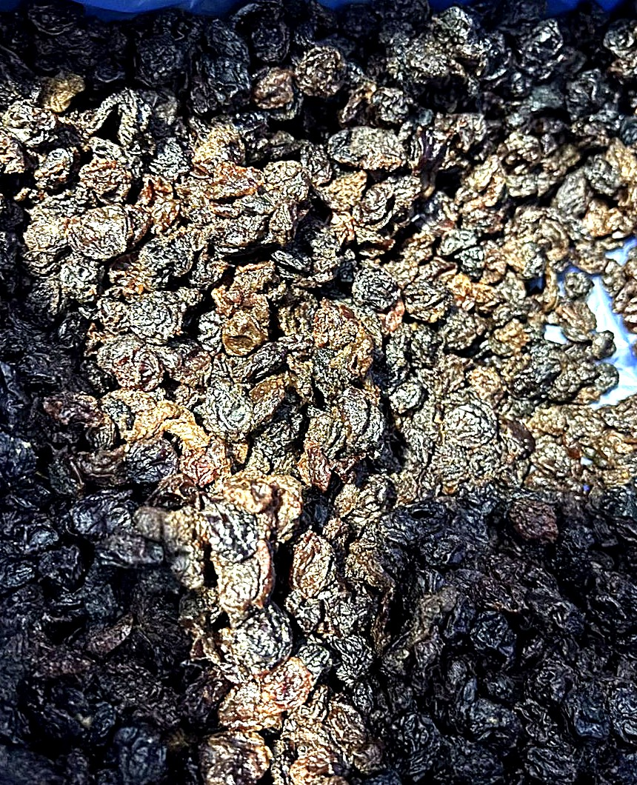

Acopio Saludable
TRÍO DE FRUTOS SECOS · 3 KG
3 kilos, 3 recetas.
La semana resuelta.

Mix con cajú y girasol
1 kg
1 kg

Dátiles con carozo
1 kg
1 kg

Pasas sin semilla
1 kg
1 kg
1
Bolitas de dátiles y frutos secos
2
Granola casera para el desayuno
3
Dátiles rellenos para la picada
$24.000
$22.000 por transferencia
Pagás antes de las 15 y sale en el
reparto del día (lunes a sábado)
reparto del día (lunes a sábado)
No tenemos local: te lo llevamos a tu casa,
sin cargo en Carlos Paz y la zona
sin cargo en Carlos Paz y la zona
WhatsApp 3541 51-9630